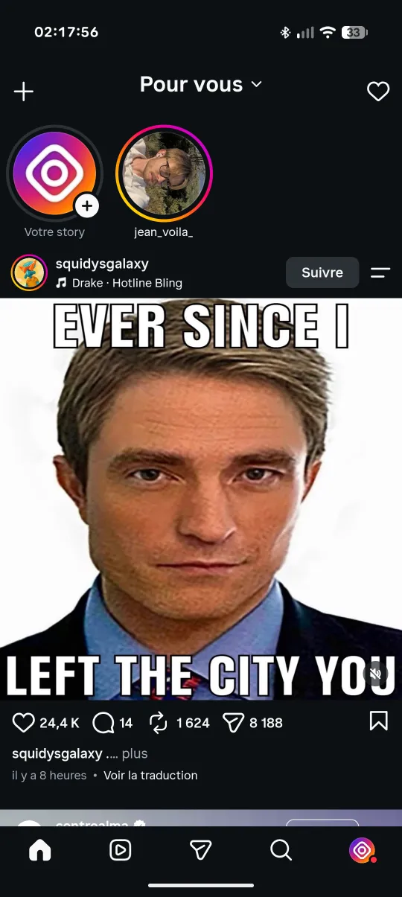
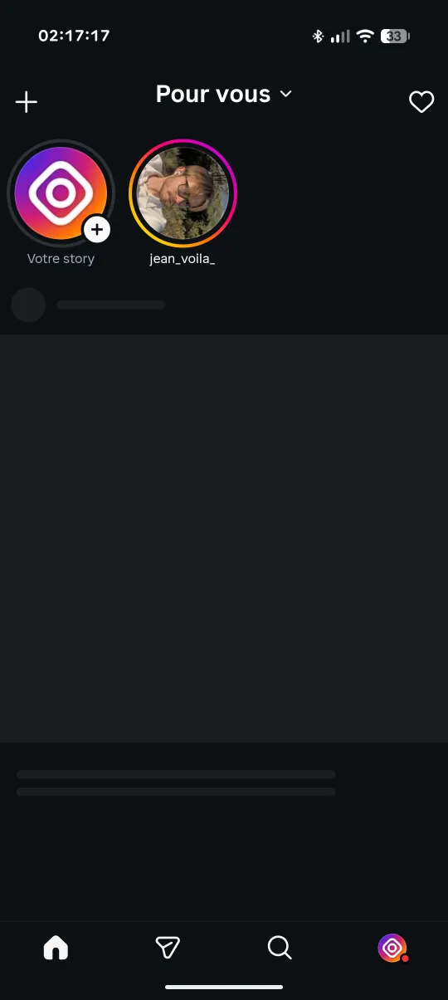

FeurstagramInstagram sans Reels
L'application Instagram pour Android sans Reels, sans fil d'actualité, sans Explorer ni publicités. Les messages, les stories et les profils restent.
téléchargements


Ce qui change
| Bloqué ou masqué (réglable) | Fonctionne toujours |
|---|---|
| Fil d'actualité | Messages privés, y compris les Reels et publications partagés |
| Onglet et fil de Reels | Stories |
| Explorer et comptes suggérés | Recherche et profils |
| Publicités, statistiques et télémétrie | Notifications |
| Instants et Notes de la messagerie | Liens vers des publications et des profils |
Chaque blocage se règle par un appui long sur l'onglet Accueil. Un fil limité à vos abonnements, le choix de l'écran d'ouverture et un verrou permanent sont aussi disponibles. Les mises à jour s'installent depuis l'application.
APK classique ou APK Clone ?
APK classique
Remplace l'application Instagram habituelle. À choisir si vous ne voulez que Feurstagram.
APK Clone
Utilise un autre nom de paquet et s'installe à côté de l'Instagram officiel.
Guides
Instagram sans Reels
Les 5 méthodes comparées.
Supprimer les Reels sur Android
Le guide pas à pas.
Instagram sans fil d'actualité
Garder seulement les DM et les stories.
Open source et transparent
Feurstagram ne collecte, ne stocke ni ne transmet vos identifiants Instagram. Toutes les modifications sont publiques sur GitHub, et vous pouvez compiler l'APK vous-même. Projet non officiel, sans lien avec Instagram ou Meta.
Contact
E-mail : feurstagram@gmail.com · Journalistes : kit presse · Actualités : @feurstagram_official · Communauté : Discord